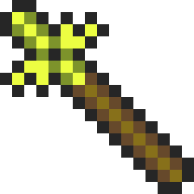
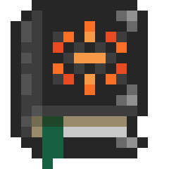

Welcome to Ornadex!
Finished Final Project |
Welcome to Ornadex! This server was created to help show information about different aspects of Orna and Aethric, two mobile games made by Northern Forge! This website is non-profit and is made by a broke college student who isn't very good at web design, so anticipate updates frequently! |
This site's most recent changes:
|  |
Weather PageA description of weather |
|
Weather intricacies revealed! Learn more about the forecast of your dukedoms with the new weather page! The unpredictable weather patterns can be predicted and used to your advantage! |
|
|  |
Codex PageCodexing how-tos and tips! |
|
Codexing is a time-honored traditions for those who want to catch 'em all. Learn about how to approach the challenge of codexing hundreds on this page! Plus, a video from an old Legend! |
|
Contact Me |
Discord: konq. Orna: Konq |
 |